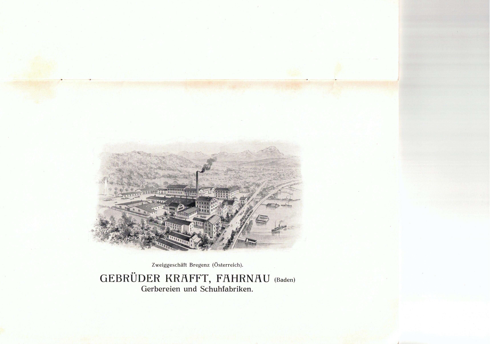
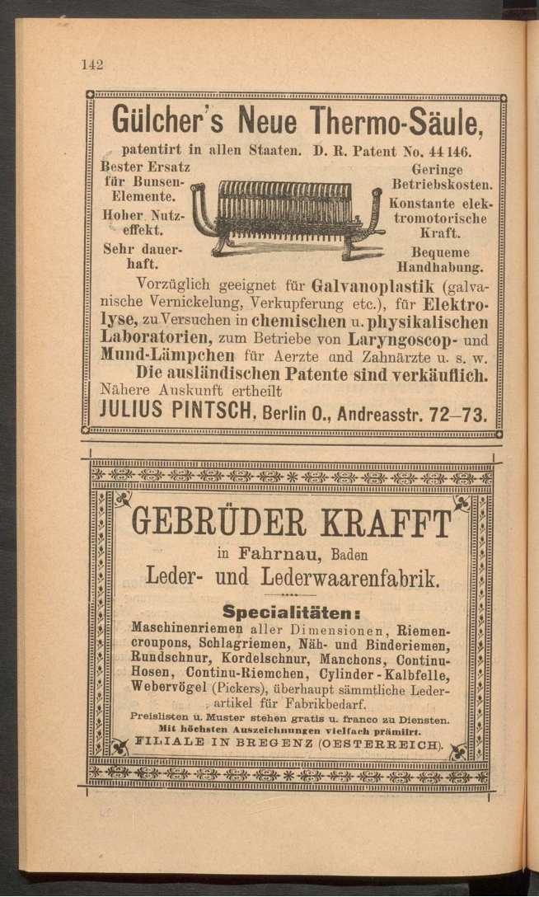

Gebrüder Krafft in Bregenz
Damals und heute · Die Geschichte eines Industrieareals von 1881 bis in die Gegenwart.
Eine Geschichte von Menschen, Maschinen und einem Industrieareal am Bodensee.
Von der Gründung der Bregenzer Niederlassung 1881 über den Verkauf von 1918 und die Enteignung in der NS-Zeit bis zur heutigen Nutzung des ehemaligen Fabrikgeländes. Eine digitale historische Ausstellung auf Grundlage unserer Quellen.

Damals
Vom Hinterhaus zur Lederfabrik
Die Gründung 1881, der Ausbau am Bodensee, die Menschen und die industrielle Produktion.
Geschichte entdecken →Der Wandel
Verkauf, NS-Zeit und Rückstellung
Vom Ende der Verbindung zu Fahrnau über die Dornierwerke und die NS-bedingte Eigentumsentziehung bis zum Vergleich von 1960.
Den Wandel verstehen →Heute
Das Areal in der Gegenwart
Was aus dem ehemaligen Industriegebiet wurde und welche Spuren der Geschichte geblieben sind.
Das Areal erkunden →Die Bregenzer Filiale 1891
Eine Anzeige aus dem offiziellen Katalog der Internationalen Elektrotechnischen Ausstellung in Frankfurt nennt die Filiale in Bregenz ausdrücklich. Ein zeitgenössischer Beleg für das Unternehmen und sein Sortiment.
Originalquelle und Einordnung →
Themen im Überblick
Über das Forschungsprojekt
Diese Webseite ist eine unabhängige historische Dokumentation. Sie verbindet die Firmengeschichte der Gebrüder Krafft mit der späteren Geschichte des Standorts und unterscheidet belegte Tatsachen von offenen Fragen.